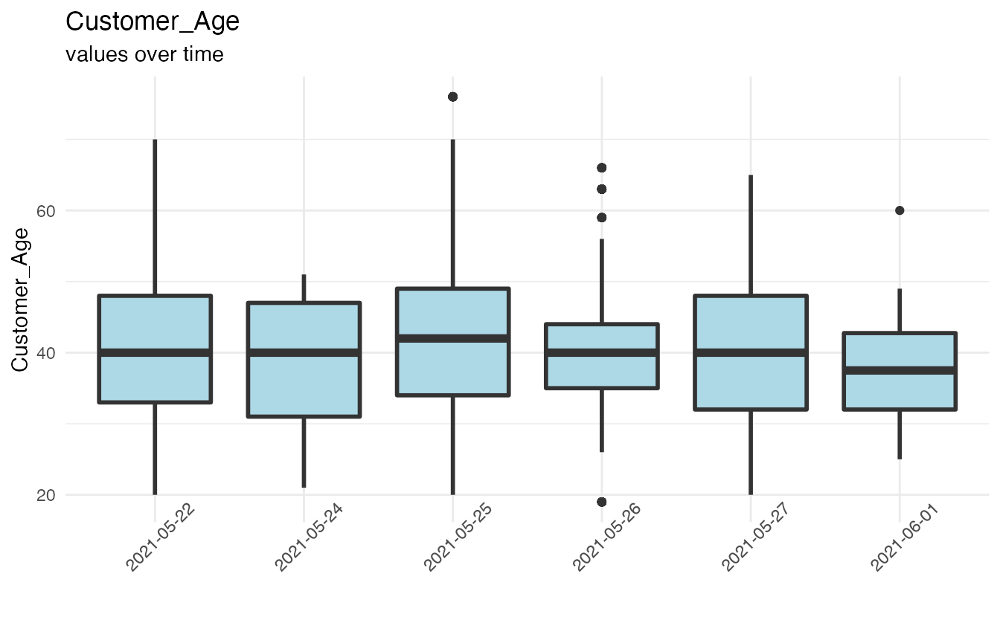
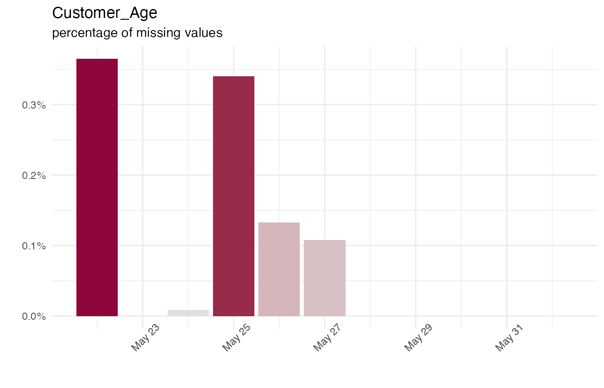

historical-dataset.RmdHistorical Datasets can be created from Adaptive models. They contain all the values of the predictors at the time of decision plus the associated outcome.
To enable this feature please see the Pega documentation.
Once enabled, the system will start generating datafiles in the repository. These are in multi-line JSON format.
In this example we use a dataset that is included in the package (hds).
To read your own Historical Data files from a repository use the “arrow” library for fast reading of LDJSON.
hds <- rbindlist(lapply(list.files("data/hds", "*.json", full.names = T),
arrow::read_json_arrow))This Historical Dataset contains a number of categories of fields, indicated by a prefix to the field name.
Customer data shows like this:
str(hds[,sort(names(hds)[startsWith(names(hds), "Customer_")]),with=F])
Classes 'data.table' and 'data.frame': 12062 obs. of 37 variables:
$ Customer_Age : chr "62.0" "41.0" "31.0" "49.0" ...
$ Customer_AnnualIncome : chr "6380.0069592238" "31057.6890282618" "86935.2642909611" "48721.8975988373" ...
$ Customer_BalanceTransaction : chr "" "" "" "" ...
$ Customer_Bankruptcy : chr "true" "false" "false" "false" ...
$ Customer_BusinessSegment : chr "matureSegmentPlus" "middleSegmentPlus" "middleSegmentPlus" "matureSegmentPlus" ...
$ Customer_C_CIFNBR : chr "Customer-2519" "Customer-4812" "Customer-2467" "Customer-2348" ...
$ Customer_City : chr "Harveybury" "Kanestad" "Lake Kathleen" "O'Harahaven" ...
$ Customer_CLV : chr "829" "1702" "771" "800" ...
$ Customer_CLV_VALUE : chr "829.0" "1702.0" "771.0" "800.0" ...
$ Customer_CreditScore : chr "732.0" "486.0" "476.0" "755.0" ...
$ Customer_Date_of_Birth : chr "18775.430708078704" "18775.430987337964" "18775.430725555554" "18775.430730474538" ...
$ Customer_Deceased : chr "" "" "" "" ...
$ Customer_Gender : chr "F" "M" "F" "M" ...
$ Customer_HealthMatter : chr "" "" "" "" ...
$ Customer_Incarceration : chr "" "" "" "" ...
$ Customer_InCollections : chr "false" "false" "false" "false" ...
$ Customer_IsCustomerActive : chr "true" "true" "false" "true" ...
$ Customer_LastReviewedDate : chr "" "" "" "" ...
$ Customer_MaritalStatus : chr "No Resp+" "Unknown" "Unknown" "Unknown" ...
$ Customer_MilitaryService : chr "false" "false" "false" "true" ...
$ Customer_NaturalDisaster : chr "" "" "" "" ...
$ Customer_NetWealth : chr "24915.0" "10108.0" "8881.0" "15563.0" ...
$ Customer_NextReviewDate : chr "" "" "" "" ...
$ Customer_NoOfDependents : chr "4.0" "0.0" "3.0" "1.0" ...
$ Customer_OrganizationLabel : chr "Schmitt, Schmitt and Schmitt" "Raynor-Raynor" "Deckow, Deckow and Deckow" "Prohaska, Prohaska and Prohaska" ...
$ Customer_Prefix : chr "Ms." "Ms." "Mr." "Ms." ...
$ Customer_pyCountry : chr "USA" "GUA" "CAN" "USA" ...
$ Customer_pyRegion : chr "" "" "" "" ...
$ Customer_RelationshipStartDate: chr "2369.681882604167" "2354.133268576392" "3534.563038298609" "283.59346604166785" ...
$ Customer_ResidentialStatus : chr "" "" "" "" ...
$ Customer_ReviewDate : chr "" "" "" "" ...
$ Customer_RiskCode : chr "R2" "R1" "R1" "R4" ...
$ Customer_RiskScore : chr "" "" "" "" ...
$ Customer_State : chr "VT" "NC" "AR" "KY" ...
$ Customer_TotalAssets : chr "" "" "" "" ...
$ Customer_TotalLiabilities : chr "" "" "" "" ...
$ Customer_WinScore : chr "71.0" "84.0" "88.0" "81.0" ...
- attr(*, ".internal.selfref")=<externalptr> The outcome and decision time:
str(hds[,sort(names(hds)[startsWith(names(hds), "Decision_")]),with=F])
Classes 'data.table' and 'data.frame': 12062 obs. of 6 variables:
$ Decision_DecisionTime : chr "20210521T165101.558 GMT" "20210521T224318.558 GMT" "20210521T171305.558 GMT" "20210521T171919.558 GMT" ...
$ Decision_InteractionID: chr "4567747631398332338" "8067856128443557643" "4567747631398332383" "4567747631398332394" ...
$ Decision_Outcome : chr "Rejected" "Rejected" "Rejected" "Rejected" ...
$ Decision_OutcomeTime : chr "20210523T054536.700 GMT" "20210523T084032.700 GMT" "20210523T084310.700 GMT" "20210523T095723.700 GMT" ...
$ Decision_Rank : chr "31.0" "9.0" "10.0" "10.0" ...
$ Decision_SubjectID : chr "Customer-2519" "Customer-4812" "Customer-2467" "Customer-2348" ...
- attr(*, ".internal.selfref")=<externalptr> Automatic IH predictors:
str(hds[,sort(names(hds)[startsWith(names(hds), "IH_")]),with=F])
Classes 'data.table' and 'data.frame': 12062 obs. of 36 variables:
$ IH_Email_Outbound_Accepted_pxLastGroupID : chr NA NA "Account" "CreditCards" ...
$ IH_Email_Outbound_Accepted_pxLastOutcomeTime_DaysSince: chr NA NA "18.076573912037038" "18.07650826388889" ...
$ IH_Email_Outbound_Accepted_pyHistoricalOutcomeCount : chr NA NA "1.0" "1.0" ...
$ IH_Email_Outbound_Churned_pxLastGroupID : chr NA NA "CreditCards" NA ...
$ IH_Email_Outbound_Churned_pxLastOutcomeTime_DaysSince : chr NA NA "87.8249513425926" NA ...
$ IH_Email_Outbound_Churned_pyHistoricalOutcomeCount : chr NA NA "1.0" NA ...
$ IH_Email_Outbound_Loyal_pxLastGroupID : chr "CreditCards" NA NA NA ...
$ IH_Email_Outbound_Loyal_pxLastOutcomeTime_DaysSince : chr "87.82507167824075" NA NA NA ...
$ IH_Email_Outbound_Loyal_pyHistoricalOutcomeCount : chr "1.0" NA NA NA ...
$ IH_Email_Outbound_Rejected_pxLastGroupID : chr "DepositAccounts" "WealthOffers" "CreditCards" "DepositAccounts" ...
$ IH_Email_Outbound_Rejected_pxLastOutcomeTime_DaysSince: chr "18.07662275462963" "18.07704849537037" "18.07657392361111" "18.07650826388889" ...
$ IH_Email_Outbound_Rejected_pyHistoricalOutcomeCount : chr "44.0" "41.0" "44.0" "43.0" ...
$ IH_SMS_Outbound_Accepted_pxLastGroupID : chr "AutoLoans" "DepositAccounts" "DepositAccounts" "Customer" ...
$ IH_SMS_Outbound_Accepted_pxLastOutcomeTime_DaysSince : chr "18.076693344907408" "18.07704849537037" "18.076573912037038" "18.07650826388889" ...
$ IH_SMS_Outbound_Accepted_pyHistoricalOutcomeCount : chr "3.0" "5.0" "3.0" "3.0" ...
$ IH_SMS_Outbound_Churned_pxLastGroupID : chr NA NA NA NA ...
$ IH_SMS_Outbound_Churned_pxLastOutcomeTime_DaysSince : chr NA NA NA NA ...
$ IH_SMS_Outbound_Churned_pyHistoricalOutcomeCount : chr NA NA NA NA ...
$ IH_SMS_Outbound_Loyal_pxLastGroupID : chr NA NA NA NA ...
$ IH_SMS_Outbound_Loyal_pxLastOutcomeTime_DaysSince : chr NA NA NA NA ...
$ IH_SMS_Outbound_Loyal_pyHistoricalOutcomeCount : chr NA NA NA NA ...
$ IH_SMS_Outbound_Rejected_pxLastGroupID : chr "DepositAccounts" "HomeLoans" "CreditCards" "WealthOffers" ...
$ IH_SMS_Outbound_Rejected_pxLastOutcomeTime_DaysSince : chr "18.07662275462963" "18.07704849537037" "18.076573912037038" "18.07650826388889" ...
$ IH_SMS_Outbound_Rejected_pyHistoricalOutcomeCount : chr "45.0" "44.0" "46.0" "42.0" ...
$ IH_Web_Inbound_Accepted_pxLastGroupID : chr "DepositAccounts" "AutoLoans" "CreditCards" "Bundles" ...
$ IH_Web_Inbound_Accepted_pxLastOutcomeTime_DaysSince : chr "18.07662275462963" "18.077119872685184" "18.076573912037038" "18.07650826388889" ...
$ IH_Web_Inbound_Accepted_pyHistoricalOutcomeCount : chr "6.0" "4.0" "10.0" "7.0" ...
$ IH_Web_Inbound_Churned_pxLastGroupID : chr NA NA "CreditCards" NA ...
$ IH_Web_Inbound_Churned_pxLastOutcomeTime_DaysSince : chr NA NA "18.076573912037038" NA ...
$ IH_Web_Inbound_Churned_pyHistoricalOutcomeCount : chr NA NA "2.0" NA ...
$ IH_Web_Inbound_Loyal_pxLastGroupID : chr "CreditCards" "CreditCards" NA "CreditCards" ...
$ IH_Web_Inbound_Loyal_pxLastOutcomeTime_DaysSince : chr "18.076693344907408" "18.077119872685184" NA "18.07650826388889" ...
$ IH_Web_Inbound_Loyal_pyHistoricalOutcomeCount : chr "2.0" "3.0" NA "3.0" ...
$ IH_Web_Inbound_Rejected_pxLastGroupID : chr "DepositAccounts" "DepositAccounts" "Account" "DepositAccounts" ...
$ IH_Web_Inbound_Rejected_pxLastOutcomeTime_DaysSince : chr "18.07662275462963" "18.07704849537037" "18.07657392361111" "18.07650826388889" ...
$ IH_Web_Inbound_Rejected_pyHistoricalOutcomeCount : chr "40.0" "43.0" "37.0" "37.0" ...
- attr(*, ".internal.selfref")=<externalptr> Other parameters:
str(hds[,sort(names(hds)[startsWith(names(hds), "Param_")]),with=F])
Classes 'data.table' and 'data.frame': 12062 obs. of 3 variables:
$ Param_ExtGroupAutoloans : chr "0.0" "0.0" "0.0" "0.0" ...
$ Param_ExtGroupCreditcards : chr "0.28122615814208984" "0.23859697580337524" "0.1713852882385254" "0.1912083625793457" ...
$ Param_ExtGroupWealthoffers: chr "0.0" "0.0" "0.0" "0.0" ...
- attr(*, ".internal.selfref")=<externalptr> The model context keys:
str(hds[,sort(names(hds)[startsWith(names(hds), "Context_")]),with=F])
Classes 'data.table' and 'data.frame': 12062 obs. of 5 variables:
$ Context_Channel : chr "Email" "Email" "Email" "Email" ...
$ Context_Direction: chr "Outbound" "Outbound" "Outbound" "Outbound" ...
$ Context_Group : chr "HomeLoans" "HomeLoans" "HomeLoans" "HomeLoans" ...
$ Context_Issue : chr "Sales" "Sales" "Sales" "Sales" ...
$ Context_Name : chr "FirstMortgageFHA" "FirstMortgageFHA" "FirstMortgageFHA" "FirstMortgageFHA" ...
- attr(*, ".internal.selfref")=<externalptr> There will also be some “meta” fields that describe where the data is coming from as well as an ID so the individual decision can be tied back to a specific version of the model.
str(hds[,names(hds)[!grepl("_", names(hds), fixed = T)],with=F])
Classes 'data.table' and 'data.frame': 12062 obs. of 6 variables:
$ positiveSampling: chr "10.0" "10.0" "10.0" "10.0" ...
$ rulesetVersion : chr "01-01-01" "01-01-01" "01-01-01" "01-01-01" ...
$ id : chr "aca6c775-9371-5d55-84d3-c0a37189502f" "62f37379-16c1-5fbb-9cba-194cfcc8bf8f" "6116b744-d9d9-5eb6-80dc-db687c7eaa0d" "052733ec-d429-54fe-a1c6-de1544d5dcd4" ...
$ negativeSampling: chr "10.0" "10.0" "10.0" "10.0" ...
$ dataCenter : chr "datacenter1" "datacenter1" "datacenter1" "datacenter1" ...
$ rulesetName : chr "CDHSample-Artifacts" "CDHSample-Artifacts" "CDHSample-Artifacts" "CDHSample-Artifacts" ...
- attr(*, ".internal.selfref")=<externalptr> The data from the JSON file will all be read as symbolic. We fix up the date/time fields and the numerics.
for (timeField in c("Decision_DecisionTime", "Decision_OutcomeTime")) {
hds[[timeField]] <- fromPRPCDateTime(hds[[timeField]])
}
# Assume fields are numeric if conversion yields < 1% NA's
for (fld in names(hds)) {
if (is.character(hds[[fld]])) {
suppressWarnings(asnum <- as.numeric(hds[[fld]]))
if (sum(!is.na(hds[[fld]]) & is.na(asnum)) / sum(!is.na(hds[[fld]])) < 0.01) {
hds[[fld]] <- asnum
}
}
}We now have all data at hand and can create some simple overviews of the data.
Here we just zoom in into one particular customer field - but this can obviously be applied to any field.
We first round the dates to a granularity of days. Depending on the needs this can be done to hours or weeks - or whatever suits the use case.
hds[, Day := as.POSIXct(round_date(hds$Decision_DecisionTime, unit="day"))]We can do a simple boxplot of Age over time. This gives an indication of the mean, p10, p90 and outlier values.
ggplot(hds, aes(factor(Day), Customer_Age)) +
geom_boxplot(size=1, fill="lightblue") +
ggtitle("Customer_Age", subtitle = "values over time") +
theme_minimal() + xlab("") + theme(axis.text.x = element_text(angle = 45, vjust = 1))
Showing the percentage of missing values per day. Missing values are a common source of issues in models.
ggplot(hds[, list(nMissing = sum(is.na(Customer_Age))/nrow(hds)), by=Day],
aes(Day, nMissing, fill=nMissing)) +
geom_col(size=1) +
scale_fill_continuous_diverging(guide="none") +
scale_y_continuous(labels=percent) +
ggtitle("Customer_Age", subtitle = "percentage of missing values") +
theme_minimal() + xlab("") + ylab("") + theme(axis.text.x = element_text(angle = 45, vjust = 1))
#> Warning: Using `size` aesthetic for lines was deprecated in ggplot2 3.4.0.
#> ℹ Please use `linewidth` instead.
#> This warning is displayed once every 8 hours.
#> Call `lifecycle::last_lifecycle_warnings()` to see where this warning was
#> generated.
Since the Historical Dataset contains the outcomes, we can also plot the day-over-day predictor performance. We can “bin” the predictor using a simple quantile binning, then use the number of “positives” and “negatives” to calculate the AUC.
This is not exactly the same binning as ADM is doing but for numeric fields this will be a good approximation. For symbolic fields the binning should take a similar approach as ADM is doing, by grouping labels by z-ratio first.
hds[, Customer_Age_Binned := cut2(Customer_Age, g=20)]
hds[, Customer_Age_BinPos := sum(Decision_Outcome=="Accepted"), by=c("Day", "Customer_Age_Binned")]
hds[, Customer_Age_BinNeg := sum(Decision_Outcome=="Rejected"), by=c("Day", "Customer_Age_Binned")]
hds[, Customer_Age_Performance := auc_from_bincounts(Customer_Age_BinPos, Customer_Age_BinNeg), by=c("Day")]